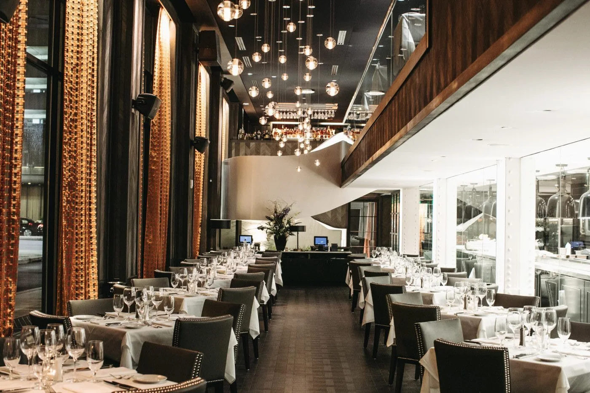

Built to perform.
Built to last.
Commercial construction and construction management backed by self-perform demolition, carpentry, concrete, and structural capabilities.
One point of accountability.
Trade coordination, procurement, field supervision, safety, quality control, and turnover.
Built around the owner’s priorities.
Preconstruction, budgeting, scheduling, constructability, design coordination, and execution.
More control where it matters.
Demolition, carpentry, concrete, and structural work supported by GMT’s own field capabilities.
Construction built around accountability.
GMT Associates operates as both a commercial general contractor and a self-perform trade contractor, giving our team direct control over critical scopes that affect schedule, safety, quality, and coordination.
Our project experience spans commercial interiors, industrial and warehouse facilities, retail, hospitality, specialty recreation, adaptive reuse, and multi-location property programs.
MORE ABOUT GMT →Field execution at commercial scale.
One team.
More control.
Self-performing critical work reduces handoffs and helps GMT respond quickly when field conditions change.
- Improved schedule control
- Direct field coordination
- Continuity from demolition through build-out
- Faster response to changing conditions
The team to plan it. The field capability to build it.
GMT’s model combines project management with hands-on field execution across the scopes that most often drive schedule and coordination.
General Contracting
Procurement, subcontractor management, field supervision, QA/QC, safety, and closeout.
↗02Construction Management
Preconstruction, estimating, scheduling, constructability, logistics, and owner coordination.
↗03Demolition
Selective interior, structural, slab cutting, equipment removal, hauling, and site preparation.
↗04Carpentry
Metal framing, drywall, doors/frames/hardware, blocking, ceilings, and finish support.
↗05Concrete
Slabs, foundations, pads, saw cutting, trenching, removal, replacement, and repairs.
↗06Structural Work
Steel installation, beam modifications, reinforced openings, mezzanine framing, and support systems.
↗07Commercial Interiors
Office, retail, restaurant, specialty recreation, and tenant-improvement execution.
↗08Industrial & Warehouse
Facility repositioning, upgrades, repairs, utilities coordination, and phased improvements.
↗Real work. Real environments.
 INDUSTRIAL
INDUSTRIALCommercial & industrial portfolio
Experience includes Faropoint properties, Del Val Food Ingredients, and warehouse conversion work.
 SPECIALTY
SPECIALTYD-BAT facilities
Specialty build-out experience in Maryland and Massachusetts.

Hamilton Phase II
Active field coordination and interior construction.

Office renovation
Interior build-out and finish experience.

Restaurant portfolio
Experience includes Eddie V’s, Steak 48, Brooklyn Bowl, and other hospitality environments.
Clear decisions. Tight coordination. Fewer surprises.
Preconstruction
Scope, logistics, budget, schedule, constructability, and trade strategy.
Procurement
Trade alignment, long-lead tracking, site logistics, and project kickoff.
Execution
Daily field management, safety, QA/QC, coordination, and documentation.
Closeout
Punch list, inspections, turnover documents, and project handoff.
Shown as documented project experience and/or business relationships in GMT’s current corporate materials and correspondence; not every named relationship represents the same delivery role or completed-project status.